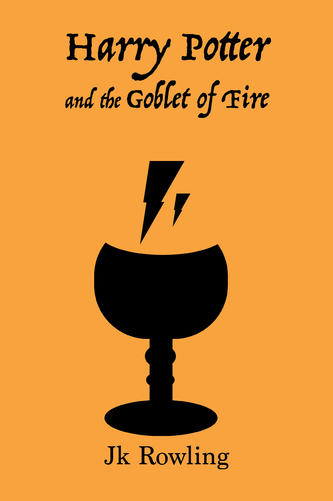
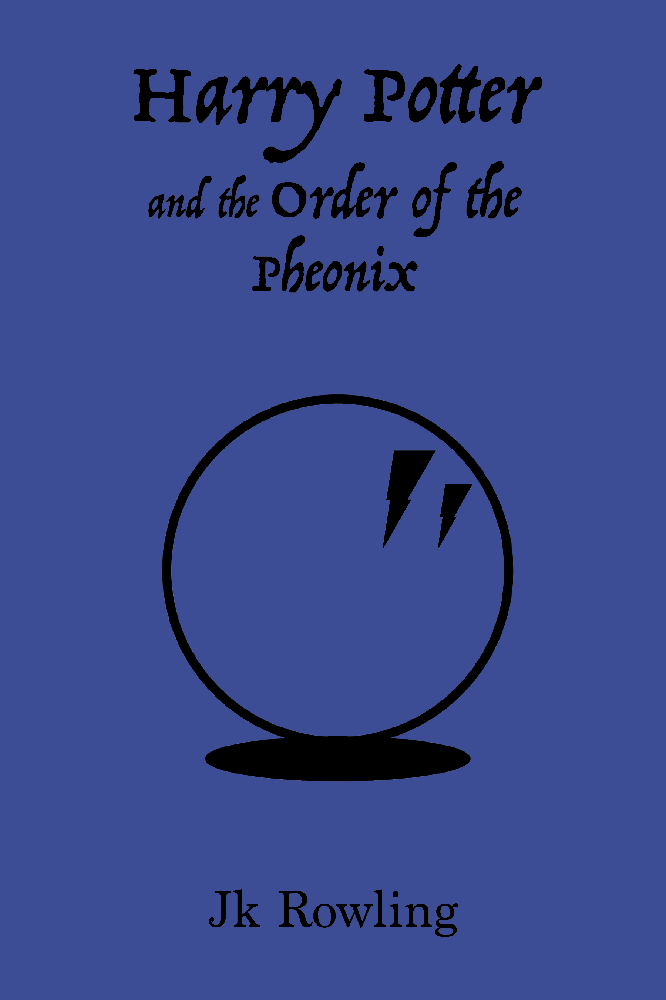
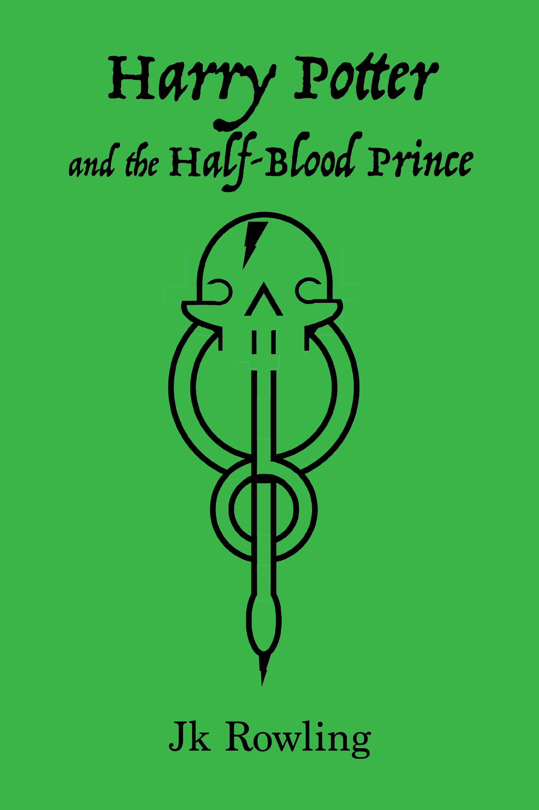

Hailey Cross
Graphic Designer
Aspiring Photographer and Graphic Designer well versed in web design and web development.
Featured Projects
View selected projects below. Each was created while attending This project involved taking an existing book series, and recreating book covers This is a project I created in my Design Applications course. We were
Wake Technical Community College. I applied my knowledge of Adobe applications
and me designer brain to come out with a totally different original peice.
Fandom Fiction Reimagined



for three of them. I am a Harry Potter nerd, so obviously I had to choose HP. I went
with a more simplistic approach as the original colours are so packed with imagery.
InkBlot
intructed to form an inkblot, and make a book cover out of it.
This was one of my favourite projects as it involves multimedia.
Work Experience
Yearbook Photography Editor
Holly Springs High School - Holly Springs, NC
2018-2020
Work included teaching the rest of the class to take photographs and
operate a camera, grading the work of their peers and having to turn some work
away if it did not meet standards. Had final say in the product before production
Education
Wake Tech Community College - Raleigh, NC
Advertising and Graphic Design - 2022
Participated in classes such as Web Design and Web Development
Tools as well as many others to gain maximum knowledge of design.